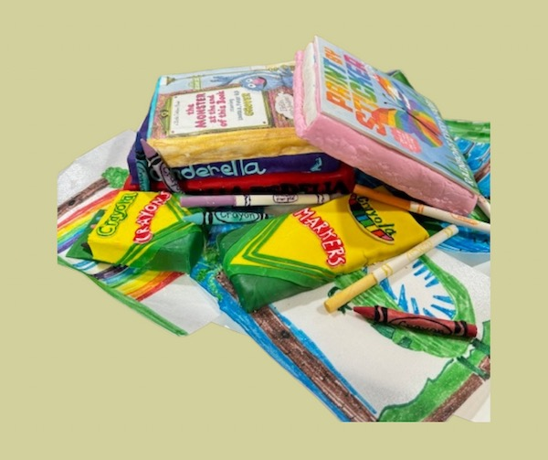
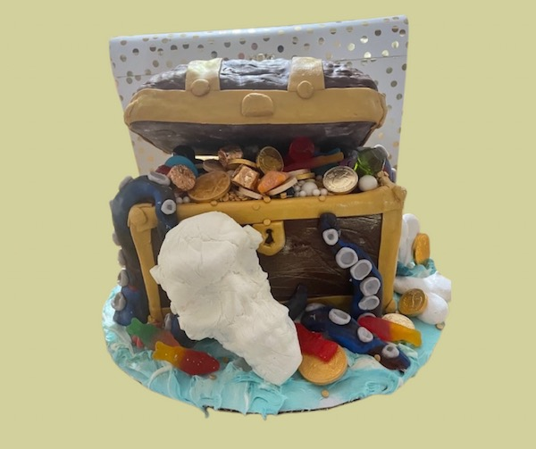

Baking for others

Bake Sale
Hold a Bake Sale. Baking cake, cookies or other sweets sell them to your local community and then donate the profit to your charity of choice. You can market through social media, or placing door hangers around your neighborhood.

Personal Bake
Baking for friends, family, members of your family, or your neighbors. I have a friend and member of my ward who a couple years ago lost her child about a month after he was born. Since than every year her family throws a birthday party to celebrate his life. People brings gifts in the form of diapers and formula that they donate to the Nicu that took care of their son. Besides bringing a gift I make a cake to share with them and their guests this has be come a great way to share my love with a friend and her family. Giving to those in your live make them feel love and appreciated.
For Goodness Cake
For Goodness Cake is an organization in Maricopa County Arizona that organizes cakes made for a child while in fostercare so they have a treat that is unique to them and recognizes their special day.